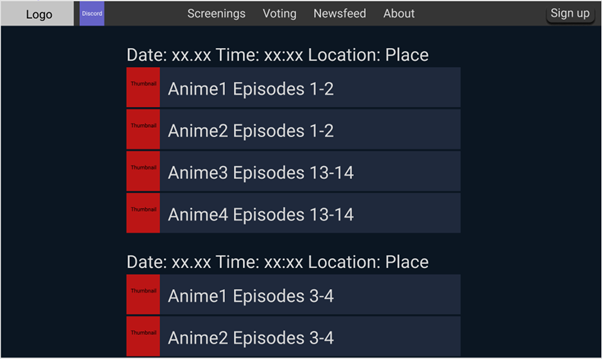

Maja Sung Hee Jenssen, Tobias Carl Axel Fall Jakobsen,
Aleksander Knutsen, Sondre Haugen Elgaaen
04.10.2020
About the client
Client: The client is Anime NTNU
Contact person: Bernt Johan Damslora, previous leader of Anime
NTNU
Anime NTNU is a student organization for people fond of anime
(Japanese animation). They host open screenings of anime at
Gløshaugen weekly.
Purpose, goals, and audience
The purpose of this website is to promote Anime NTNU and recruit
new members. It should be easier for potential new members, as
well as established members, to look up screenings. The website
should also have a clear layout and be made in such a way that
it is intuitive to use by both old and new members. In this
context, the website should provide a good solution for sorting
the information being displayed on the website.
The audience is all people fond of or curious about anime. As
Anime NTNU is a voluntary student organization at NTNU, the main
portion of the audience will consist of students at NTNU. Most
visitors will therefore be young, which means we can keep the
font size small in favor of other content. Furthermore, those
who visit the website are most likely looking for information
about Anime NTNU itself or their screenings. This is why we have
made the decision of having a front page with different
elements, showcasing the information that would be the most
relevant for the audience. Lastly, Anime NTNU has a record of
attracting international students and the site will therefore be
made in English.
Navigation structure
The navigational structure of the new Anime NTNU website is
visualized in figure 1. Initially, the first page one can see
when visiting Anime NTNU’s website is the frontpage. And from
here, the visitor will be able to access all of the pages
included in the website. This is possible through the use of a
navbar. In addition, the visitor will be able to go back to the
front page from every page by clicking on the logo in the
navbar.
We chose to implement this type of interactive design because we
wish to give the visitor as much freedom as possible within the
website. We also wish to encourage visitors of Anime NTNU to
further check out specific content on the website. For example,
from the front page the visitor will be able to see the time and
date, as well as the title of the anime which will be showcased
on the next screening hosted by Anime NTNU. If the visitor
clicks on the featured screening, the visitor will be redirected
to the screenings page. If the visitor does not click on the
featured screening but becomes curious about other future
screenings, the visitor can easily access this type of
information by interacting with the navbar.
Figure 1
Page layout and appearance
Font header: Open Sans, Verdana
Font body: Open Sand, Verdana
Colors
Background color body: #0B1622
Background color content: #1F293C
Text:
Links
Unvisited: Text has slightly darker color than rest
of the text, thin (color) underline
Visited: No difference from unvisited
Hover: Bold (color) text, no underline
Active (the moment it is clicked)
Button
Content
Front page
The front page is the first page the visitor sees when they
visit the website. The content consists of three separate
sections as shown in figure 2. The section on top is a textbox
containing a bit of information about Anime NTNU and welcoming
the visitor to their website. The section on the left side of
the screen will showcase the latest news from the newsfeed page,
and the section on the right side of the screen will showcase
upcoming screenings from the screenings page. The sections will
have a blue background color (#1F293C) that is lighter than the
color of the main body. We want this content to be available
from the front page as this is the type of information we expect
most visitors will be interested in. It might also make the
visitor curious about the rest of the website, and prompt them
to check out other pages. We want the website to have a clear
and intuitive design that prompts the visitor to explore and
interact with the different pages.
Figure 2
Header
Figure 3Figure 4
Mobile-responsive version of header
"Become a member"-button
Figure 5
Newsfeed
Figure 6
Screenings

Figure 7
Voting
About
Minimum requirements
Screenings - This script will perform a function which
retrieves the title and date of a particular screening in
screenings.html and shows it on the frontpage.
Vote - On the voting page there will be a list with names of
different animes the visitor can re-arrange in order to send
AnimeNTNU feedback about what they would like to see in the
upcoming semester. This list will contain items which will
have a drag and drop feature.
"Become a member"-button - In the navbar there will be a
button which OnClick will open up a pop-up window. This
pop-up window will contain two fields, for signing up with
an username and a password, making it possible to sign up as
a member.
A function that creates a pop-up window. When clicking on a
box containing an anime it will display more information
about the chosen anime. The pop-up should create a grey
overlay over the rest of the page. There should be an exit
button that closes the pop-up.
Plan
We have created a tentative organizational scheme to create and
store our files, as well as a work division table to assign
people tasks and keep track of internal deadlines.
Organizational scheme
All of the following files will be in a common folder which will
be created when we start on part 3 - project coding - of the
project.
about.html
frontpage.html
newsfeed.html
screenings.html
voting.html
css
master.css
images
logo.png
thumbnail_1.png
thumbnail_2.png
thumbnail_3.png
thumbnail_4.png
thumbnail_5.png
modularity
navigation_bar.part
scripts
showScreenings.js
voting.js
becomeMember.js
popupNotification.js
Work division and deadlines
Filename
Description
In charge
Deadline
frontpage.html
The homepage
Aleksander
15.10.2020
newsfeed.html
News items with information about Anime NTNU,
written by the moderators of the page
Tobias
15.10.2020
screenings.html
Calendar information about screenings hosted by
Anime NTNU
Sondre
15.10.2020
voting.html
A list of series the visitor can rank according to
what the visitor would like to see the most during
the upcoming semester
Maja
15.10.2020
about.html
Information about Anime NTNU and how to contact the
organization
Sondre
15.10.2020
navigation_bar.part
Maja
15.10.2020
logo.png
Logo for the header
Aleksander
15.10.2020
showScreenings.js
A script to fetch and display screenings on the
front page
Sondre
31.10.2020
voting.js
A script to implement a drag and drop list
Maja
31.10.2020
becomeMember.js
A script to display a pop-up window for signing up
as a member
Tobias
31.10.2020
popupNotification.js
A script to create a pop-up window displaying more
information about a chosen anime
Aleksander
31.10.2020
master.css
The CSS file containing all the styling for the
website